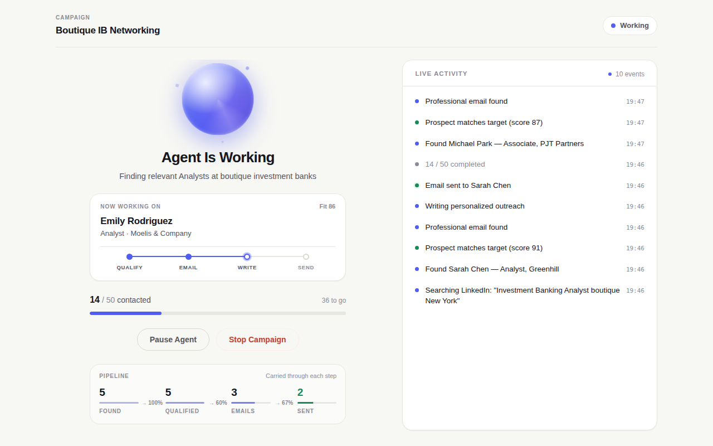

Tell it where you want to work. It finds the right people and does the outreach.
You give it a goal — the field, the kind of firm, how many people. It works through that list one person at a time, in a Chrome window you can watch.
Searches LinkedIn for professionals matching your goal and reads each profile to judge whether they are actually a fit.
Looks up a real, verified work email. Anyone it cannot find a verified address for is skipped rather than guessed at.
Writes a short introduction grounded in your résumé and their background, then sends it from your own Gmail.
It names the person it is working on right now and shows exactly how far through the list it is. Nothing happens off-screen.

The agent asks for LinkedIn and Gmail, so it is worth being precise about what that actually means.
Open the .dmg and drag Recruiting Agent into Applications.
If it opens normally, you are done — skip to the next step.
xattr -cr "/Applications/Recruiting Agent.app"
The agent drives its own separate Chrome window, kept apart from your everyday browsing. Get Chrome
Add your name, school and résumé, describe who you want to reach, then connect LinkedIn and Gmail and press start.